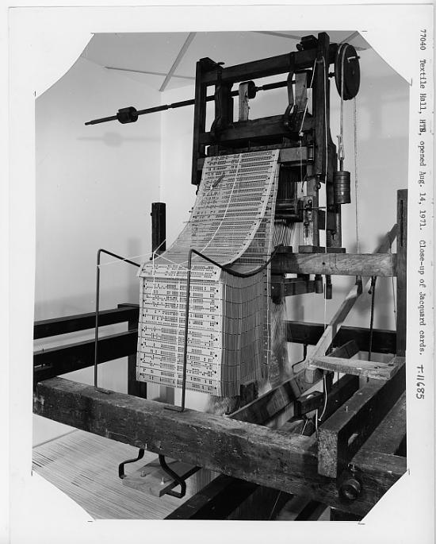

What Came Before
Invented in 1804 by Joseph Marie Jacquard, the Jacquard loom is widely considered a foundational ancestor to modern computers because it introduced the concept of programmable hardware using binary code. To weave complex patterns automatically, the loom relied on a chain of stiff, punched cards that dictated its actions: a hole in the card allowed a hook to lift a warp thread, while a solid space kept the thread down. This binary system of "hole" or "no hole" functioned identically to the ones and zeros used in modern computing to store and process data. By simply swapping out the deck of cards, an operator could reprogram the machine to produce an entirely new textile design without altering its physical mechanics—a breakthrough that directly inspired Charles Babbage’s Analytical Engine and Ada Lovelace’s early algorithms, eventually leading to the punch-card tabulating machines that powered the dawn of the digital age.